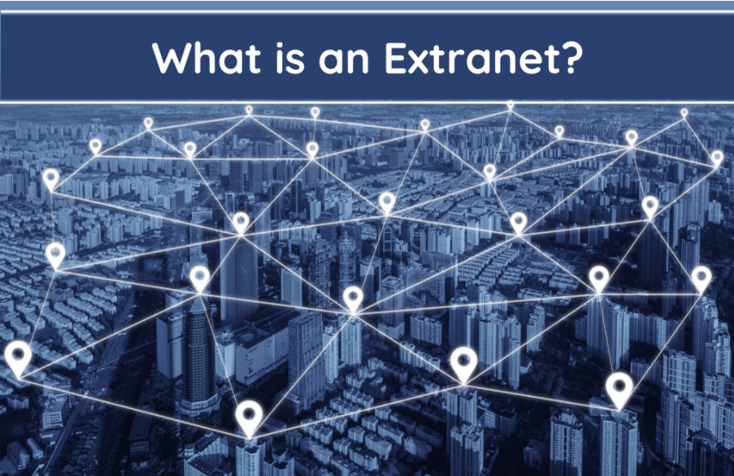

An extranet is an extension of an organisation's intranet that provides controlled access to selected external parties — such as business partners, suppliers, customers, or contractors — while keeping the rest of the internal network private. It occupies the middle ground between a fully public internet and a fully private intranet.
Extranets are commonly used in B2B (business-to-business) settings where two companies need to share specific information securely, such as inventory data, project management tools, or order tracking systems. Access is typically secured using VPNs, login credentials, or dedicated leased lines. Unlike a public website, only authenticated external users can access extranet content.
Key features of Extranets include: